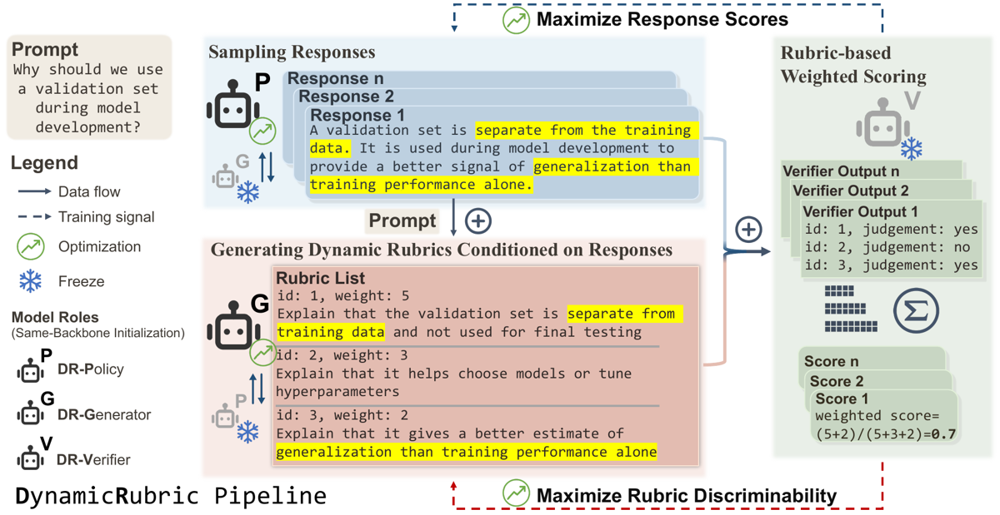
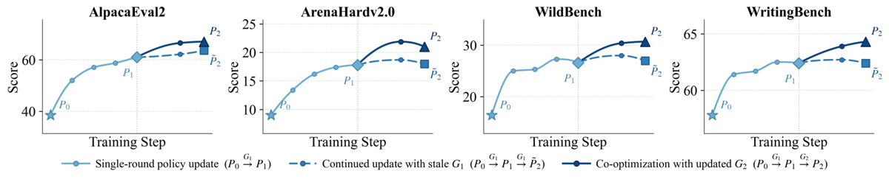
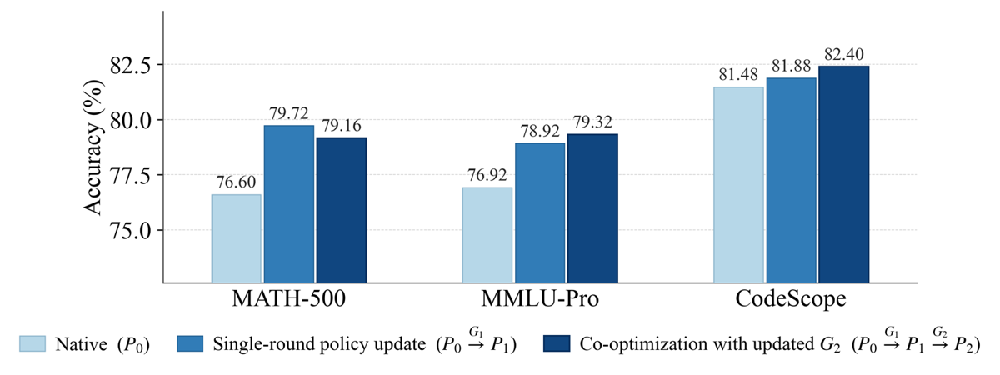

TL;DR. Le rubric generator est ré-entraîné par RL à chaque round sur les response sets produits par la policy courante, avec un reward de discriminabilité (variance de Bernoulli des items binaires sur les 8 rollouts) calibré en direction par un reward anchor (ranking Bradley-Terry sur des réponses classées de Nectar) ; la policy est ensuite optimisée par GRPO contre le score rubrique agrégé.
Claim principal. (i) Théorique : sous une vue d'allocation de masse de probabilité, le gain directionnel de déplacer de la masse de $y^-$ vers $y^+$ est exactement l'écart de score de l'évaluateur $E(x,y^+)-E(x,y^-)$ [§3.1, éq. 7] — donc ce sont les écarts relatifs sur la distribution induite par la policy qui constituent le signal d'optimisation. (ii) Empirique : avec un backbone 8B, un générateur de rubriques entraîné de cette façon fournit une supervision de policy supérieure à un reward model scalaire 70B et à un générateur de rubriques statiques 235B, sur 4 benchmarks open-ended (AlpacaEval2 67,1 vs 35,2 / 58,5 ; [Tab. 2]). (iii) Un modèle optimisé par DynamicRubric est déployé sur 100 % du trafic de WeChat Search AI answering [§5.5].
⚠️ Le claim de l'abstract « improves evaluator performance … than baselines using a 70B reward model » n'est pas soutenu par [Tab. 1] : Nemotron-70B bat DR-Generator-8B sur JudgeBench (66,0 vs 57,4), RM-Bench (85,2 vs 69,8), UltraFeedback (77,4 vs 68,7) et AEOLLM-Acc (57,5 vs 51,2). Voir §7.0.
⚠️ Ce n'est pas un environnement agentique : pas d'outils, pas de sandbox, pas d'état. C'est un harness d'évaluation en 3 rôles autour d'un rollout single-turn. Je remplis la grille en conséquence.
[response_list_replace]). Il ne voit jamais $\mathcal C_{\mathrm{anchor}}$ ni les labels de préférence [§3.4 ; App. I].[{"rubric": "<str>", "weight": <int 1..5>}, ...] dans un bloc <answer>, précédé d'un raisonnement libre. $M$ (nombre de rubriques) non contraint, poids non prescrits : « We do not fix $M$ or prescribe item weights, allowing DR-Generator to determine both during training » [§3.4, App. D].[{"id": <int>, "reason": "<str>", "judgement": "yes"|"no"}, ...], un objet par rubrique, ordre et IDs préservés [App. K].<think>…</think> <answer>…</answer> <result>…</result> [App. K].Prompt : « Estimate the angular momentum of Hurricane Florence at landfall, choose one option from A-J, and repeat the selected letter five times. » Response A : $L=I\omega$, inertie de type disque, estimations numériques de masse/rayon/vitesse angulaire, $L\approx 3\times10^{19}$, option B. (réponse annotée préférée) Response B : $L=mr^2\omega$, $\omega\approx 10^{-1}$ rad/s, $L\approx 10^{23}$, option A.
Rubriques du générateur zero-shot $G_0$ : 1. donne la lettre et la répète cinq fois · 2. inclut un raisonnement pas à pas · 3. utilise la bonne formule de moment angulaire · 4. reste centré sur la question. → les deux réponses satisfont les 4 critères → scores identiques (15 vs 15) → top-1 accuracy = 0,0 sur 5 seeds [Tab. 7].
Rubriques du générateur co-évolué $G_2$ : 1. mentionne les valeurs exactes de masse/rayon/vitesse angulaire · 2. compare l'estimation aux options proposées · 3. mentionne la pression centrale ou la vitesse du vent · 4. énonce l'approximation en disque · 5. discute la constante de proportionnalité du moment d'inertie · 6. calcule $\omega$ à partir de la vitesse tangentielle et du rayon · 7. estime masse et rayon avec des valeurs typiques d'ouragan · 8. calcule à la fois le moment d'inertie et le moment angulaire. → 53 vs 24, nDCG 1,0, Acc 1,0 sur 5 seeds [Tab. 7].
⚠️ Mon évaluation : cet exemple illustre exactement le mécanisme et son risque. Les 8 critères de $G_2$ sont une check-list de procédure de calcul, pas une vérification du résultat. Une réponse qui coche les 8 items avec un résultat faux obtient 1,0. Sur JudgeBench la corrélation joue ; sur un domaine où la conclusion compte, le score récompense la forme du raisonnement.
Hybride à deux étages, entièrement LLM. Un générateur de rubriques appris (DR-Generator, 8B, entraîné par RL) + un vérifieur LLM gelé (DR-Verifier, Qwen3-30B-A3B par défaut) qui applique chaque item binaire à chaque réponse. Aucun exact match, aucune exécution de test, aucun reward model scalaire dans la boucle.
Score de réponse [éq. 12] : $$E_\phi(x,y\mid\mathcal C)=\frac{\sum_m w_m v_m(y;\mathcal C)}{\sum_m w_m},\quad v_m\in{0,1},\ w_m\in{1,\dots,5}$$
(a) Discriminabilité [éq. 13], on-policy : $$R_{\mathrm{disc}}(x,\mathcal C;\phi)=\frac{\sum_m w_m\,\bar v_m(1-\bar v_m)}{\sum_m w_m},\quad \bar v_m=\tfrac1K\sum_i v_m(y_i)$$ = variance de Bernoulli pondérée des jugements sur le response set courant. Maximale à $\bar v_m = 0{,}5$ (avec $K=8$ : split 4/4).
Les auteurs identifient eux-mêmes son défaut : « flipping all yes/no outcomes preserves $R_{\mathrm{disc}}$ while reversing the induced relative score gaps. Thus, the objective can also reward superficial splits » [§3.4]. C'est un reward hacking analytique, anticipé par conception.
(b) Anchor [éq. 14], off-policy : $$R_{\mathrm{anchor}}=\sum_{i=1}^{n-1}\sum_{j=i+1}^{n}\frac{\log\sigma(S_i-S_j)}{(j-i)\times 2^{\,i-1}},\quad S_i=E_\phi(x,y_i^0\mid\mathcal C)$$ Bradley-Terry [bradley1952rank] pondéré façon Rank-Biased Precision [moffat2008rank] : le poids $2^{-(i-1)}$ privilégie fortement le haut du classement, le facteur $1/(j-i)$ privilégie les paires voisines (distinctions fines).
Structure critique du couplage [§3.4, Alg. 1 l.5-8] : pour un même prompt $x$, le générateur observe $\mathcal C$ (8 rollouts on-policy) et génère les rubriques ; ces mêmes rubriques sont ensuite appliquées à $\mathcal C_{\mathrm{anchor}}$ (7 réponses classées de Nectar) pour calculer $R_{\mathrm{anchor}}$. Le générateur ne voit jamais $\mathcal C_{\mathrm{anchor}}$ : « calibrating local separations without exposing anchor-specific shortcuts » [§3.4]. Anti-hacking explicite et bien conçu.
(c) Combinaison : $\mathcal J_{\mathrm{evaluator}} = \mathcal J_{\mathrm{disc}} + \lambda\,\mathcal J_{\mathrm{anchor}}$ [éq. 15], avec $\lambda=1$ — justifié parce que les deux rewards sont combinés au niveau de l'advantage, chacun normalisé séparément en z-score intra-groupe puis sommé : $A_{i,t}=\hat A^{disc}{i,t}+\hat A^{anchor}$ [App. D, éq. non numérotée]. « which reduces scale mismatch and allows us to set $\lambda=1$ » [§5.1]. ✅ Astuce propre : rend $\lambda$ insensible aux échelles très différentes des deux rewards ($R_{\mathrm{disc}}\in[0;0{,}25]$, $R_{\mathrm{anchor}}$ non borné négativement).
(d) Garantie théorique [éq. 16 ; App. J, Lemme 1 + Théorème 1] : il existe $c_{\mathrm{disc}},c_{\mathrm{anchor}}>0$ et un résidu $\epsilon_t$ indépendant de $\phi$ tels que $\Delta_{\mathrm{gap}}\ge c_{\mathrm{disc}}\mathcal J_{\mathrm{disc}}+c_{\mathrm{anchor}}\mathcal J_{\mathrm{anchor}}+\epsilon_t$, avec $c_{\mathrm{disc}}=\gamma\rho$, $c_{\mathrm{anchor}}=\beta$. ⚠️ Cette garantie repose sur une hypothèse posée, non vérifiée : la « aggregate anchor calibration condition » $-\eta_{\mathrm{res}}^{t,\gamma,\rho}(\phi)\ge\beta\,\mathcal J_{\mathrm{anchor}}^t(\phi)+\epsilon_t$ [App. J, « Aggregate anchor calibration »] — c'est-à-dire l'hypothèse que le terme anchor contrôle effectivement le résidu directionnel sur la distribution on-policy. C'est exactement la question de la dérive du juge, posée comme hypothèse plutôt que démontrée ou mesurée. $\gamma$, $\rho$, $\beta$ ne sont jamais instanciés numériquement.
Aucun. Pas de reward de format (le format est contraint par decoding), pas de pénalité de longueur, pas de bonus. Pour la policy, le reward est exclusivement le score rubrique [éq. 17]. ⚠️ Absence de pénalité de longueur sur un reward par rubriques : c'est le vecteur de verbosité classique (plus de contenu → plus d'items cochés). Non discuté, non mesuré.
C'est le point décisif, à lire précisément.
| Ce qui est mesuré | Contre quoi | Quand | Référence |
|---|---|---|---|
| Accuracy / nDCG du couple (générateur, verifier gelé) | 6 benchmarks de préférence à annotations humaines : JudgeBench, Personalized-RewardBench, RM-Bench, UltraFeedback, AEOLLM, LMSYS-Chat-1M | $G_0$, $G_1$, $\tilde G_2$, $G_2$ — donc avant ET après co-évolution | [Tab. 1] ; [Fig. 2a] |
| Qualité des rubriques sur 6 dimensions | GPT-4.1 juge, 100 instances Personalized-RB + 100 UltraFeedback | après entraînement seulement | [App. G.4, Fig. 5] |
| Qualité des réponses de DR-Policy | DeepSeek-V4-Flash, contre-vérifié GPT-4.1 | après entraînement seulement | [Tab. 2] ; [Tab. 8] |
| Comportement utilisateur réel | A/B online (search volume, duration, positive behaviors) | production | [§5.5] |
Donc, précisément : - ✅ L'accord avec des annotations humaines est bien re-mesuré à chaque round de co-évolution — [Fig. 2a] trace $G_0\to G_1\to G_2$ sur JudgeBench, RM-Bench, UltraFeedback, AEOLLM. Ce n'est pas une mesure unique au départ. C'est le garde-fou réel du papier. - ❌ Mais aucun humain n'évalue jamais les sorties de DR-Policy. Les benchmarks de préférence sont des ensembles de réponses figés, exogènes, dont la distribution ne suit pas la policy. La fiabilité du vérifieur est donc mesurée sur une distribution qui n'est pas celle que l'évaluateur supervise — c'est-à-dire exactement la distribution sur laquelle le papier lui-même soutient qu'un évaluateur peut être non fiable [§3.3, citant lambert2025rewardbench, tan2025judgebench]. - ❌ Taux de faux positifs / faux négatifs au niveau item : jamais mesuré. Aucune validation de DR-Verifier lui-même (précision de son jugement yes/no sur un item donné) contre des humains. La section Limitations l'admet : « We also keep DR-Verifier frozen rather than training a dedicated verifier » et « our study does not include stronger black-box verifiers such as GPT-4.1 during training because of evaluation cost ». - ❌ Les auteurs reconnaissent explicitement : « Although our robustness checks and qualitative inspection provide partial safeguards, they do not replace large-scale human validation » [App. I, Potential Risks].
Les auteurs notent que GRPO est le bon choix conceptuel ici : « GRPO turns evaluator scores into relative advantages within each sampled set, aligning policy optimization with the score-gap view » [§5.1] et « the policy update depends on within-set relative scores rather than absolute reward scale » [App. A]. ✅ Cohérence méthode↔théorie.
Hyperparamètres [App. D] :
| Paramètre | Valeur |
|---|---|
| Rollout size $K$ (= taille de groupe GRPO) | 8 |
| Global batch size | 256 |
| $\beta$ (coef. KL) | 0,01 |
| LR DR-Generator | $5\times10^{-6}$ |
| LR DR-Policy | $1\times10^{-6}$ |
| Max input/output DR-Policy | 8K / 8K |
| Max input/output DR-Generator | 24K / 8K |
| Nombre de rubriques $M$, poids $w_m$ | non contraints (appris) |
| $\lambda$ | 1 (permis par la combinaison au niveau advantage) |
| Décodage | SGLang structured output (JSON) |
Non précisé : température de sampling, $\varepsilon$ de clipping, nombre de steps par stage, nombre de rounds $T$ effectivement utilisé (le pseudo-code paramètre $T$ [Alg. 1] mais la valeur n'est jamais donnée ; [Fig. 2], [Fig. 3] et [App. H] vont jusqu'à $G_2/P_2$, donc T = 2 de fait), modèle de référence $\pi_{\mathrm{ref}}$ (rafraîchi entre rounds ou non — question importante, non traitée), optimiseur, schedule de LR, warmup, nombre de seeds d'entraînement (apparemment 1 par configuration).
Stabilité. Une seule astuce revendiquée : la normalisation séparée des advantages pour les deux rewards du générateur, motivée par le « scale mismatch » [§5.1]. Aucune instabilité rapportée, aucune approche essayée puis abandonnée. ⚠️ Pour un schéma bilevel avec deux modèles RL couplés, l'absence totale de récit d'instabilité est peu crédible ; c'est plus vraisemblablement une omission de rédaction qu'une absence de problème.
Compute [App. E, Tab. 5] — normalisé par la baseline rule-based (même backbone Qwen3-8B), toutes les pipelines recevant 1× d'allocation GPU auxiliaire :
| Méthode | Verifier requis | Allocation GPU min. | GPU-hours réelles |
|---|---|---|---|
| Rule-based | non | 1× | 1× |
| Skywork-27B | non | 1,125× | 2,2× |
| Skywork-27B w/ responses | non | 1,125× | 2,6× |
| Nemotron-70B | non | 1,5× | 2,4× |
| Nemotron-70B w/ responses | non | 1,5× | 3,5× |
| RaR (générateur 235B) | oui | 1×* | 2,5×* |
| DynamicRubric-8B | oui | 1× | 3,0× |
* pour RaR, le coût de génération des rubriques pour les 36K prompts avec le modèle 235B n'est pas inclus [note de Tab. 5]. Valeurs absolues (GPU-heures, type de GPU, durée en wall-clock) : non précisé.
(a) Splits superficiels / inversion de signe du reward de discriminabilité. - Comportement : $R_{\mathrm{disc}}$ est invariant par inversion globale des jugements — « flipping all yes/no outcomes preserves $R_{\mathrm{disc}}$ while reversing the induced relative score gaps » ; « the objective can also reward superficial splits » [§3.4]. - Détection : analytique, pas empirique — anticipé par construction, jamais observé ni quantifié. - Correction : terme anchor Bradley-Terry sur données classées, qui fixe la direction. - Preuve que la correction sert : ablation [Tab. 3] — sans anchor, macro moyenne 56,9 vs 58,1 avec objectif complet. ⚠️ 1,2 point de macro. La variante « w/o anchor » reste très compétitive (72,4 sur Personalized-RB, 69,8 sur RM-Bench = égalité avec l'objectif complet). La preuve que l'ancre est indispensable est donc faible : l'ablation montre un gain, pas l'effondrement directionnel annoncé. ⚠️ Mon interprétation : sur 2 rounds, le générateur initialisé depuis un Qwen3-8B instruct-tuné garde un prior de qualité suffisant pour que le signe ne s'inverse pas spontanément ; l'ablation ne teste pas le régime long où la dérive est censée apparaître.
(b) Rubriques trop larges / saturées (le bottleneck que le papier attaque). - Comportement : le générateur zero-shot produit des critères (« includes step-by-step reasoning », « stays focused on the question ») que toutes les réponses satisfont → scores identiques → gap nul → gradient nul. [App. H] : $G_0$ donne 15 vs 15, top-1 accuracy 0,0 sur 5 seeds [Tab. 7]. - Détection : case study + benchmarks évaluateur. - Correction : $R_{\mathrm{disc}}$, qui pénalise $\bar v_m\in{0,1}$.
(c) Rubriques hardcodées sur les réponses observées (over-fitting au response set). - Comportement anticipé : le générateur voit les réponses et pourrait copier un détail d'une réponse dans la rubrique, ce qui reviendrait à désigner un gagnant plutôt qu'à évaluer. - Correction : dans le prompt uniquement [App. K] — « Do not hardcode specific facts, numbers, names, entities… unless explicitly provided in the user prompt » ; « Do not write rubrics around highly specific mistakes that appear in only one or two responses » ; « Do not treat the stronger responses in the pool as perfect » ; « Rubrics must not refer to any specific response » ; « Avoid rubrics that require external factual knowledge to verify ». - ⚠️ Correction purement prompt-level, jamais auditée. Aucune mesure du taux de rubriques qui violent ces règles après entraînement. Or le reward pousse dans la direction inverse : maximiser la variance sur le set observé récompense précisément la spécificité au set. La meta-évaluation [Fig. 5] mesure la « specificity » comme une qualité (67,6 % de win rate) sans distinguer « spécifique à la tâche » de « spécifique à ces réponses-là ». ⚠️ Le seul garde-fou contre ce failure mode est une consigne en langue naturelle, et la métrique censée le surveiller le compte comme un progrès. - ✅ Contre-mesure structurelle valable en revanche : le générateur ne voit pas $\mathcal C_{\mathrm{anchor}}$, donc des rubriques trop collées à $\mathcal C$ sont punies par $R_{\mathrm{anchor}}$ [§3.4]. C'est le vrai frein, et il n'est efficace que dans la mesure où $\mathcal C_{\mathrm{anchor}}$ reste informatif.
(d) Risques reconnus sans mesure [App. I, Potential Risks, recopié] : « policies may learn to satisfy verifier-specific preferences or rubric-compliance patterns that do not fully match broader human judgments. Generated rubrics may also inherit biases or blind spots from the generator and verifier, and repeated optimization can amplify such patterns. » Future work proposé : ensembles de vérifieurs, calibration humaine, procédures d'audit du reward hacking avant déploiement.
(e) Régression MATH-500 au round 2 de co-évolution. [Fig. 3] : MATH-500 passe de 79,72 ($P_1$, un seul round) à 79,16 ($P_2$, co-évolution avec $G_2$), soit −0,56, pendant que les 4 benchmarks open-ended jugés par LLM montent tous de $P_1$ à $P_2$ [Fig. 1b]. MMLU-Pro (+0,40) et CodeScope (+0,52) montent légèrement. - C'est le seul point du papier où une métrique à vérification exacte diverge de la métrique co-évoluée. C'est précisément la signature attendue d'une dérive : le score mesuré par l'évaluateur qui co-évolue monte, la capacité mesurée par un vérifieur externe ne monte pas. - Le texte affirme « DR-Policies consistently improve over the initial policy across these out-of-distribution tasks » [§6.2] — formellement exact ($P_2 > P_0$), mais la comparaison $P_2$ vs $P_1$ n'est jamais commentée alors que c'est celle qui teste la co-évolution. - ⚠️ Avec 1 seed, −0,56 sur MATH-500 est dans le bruit. Ce qui manque n'est pas l'interprétation, c'est l'instrument : sans variance, on ne peut ni confirmer ni écarter une dérive naissante.
(f) Aucune pénalité de longueur. Reward = fraction d'items cochés, items générés sans cap sur $M$, benchmarks d'évaluation (AlpacaEval2, WritingBench) connus pour leur biais de verbosité. Longueur des réponses de DR-Policy avant/après : jamais rapportée. ⚠️ Vecteur de hacking le plus banal du domaine, non instrumenté.
(g) Le générateur contrôle l'agrégation. $M$ et $w_m$ appris, sans contrainte. Rien n'empêche le générateur de converger vers des listes longues d'items faciles pondérés 5. Aucune statistique de $M$ ni des poids n'est publiée à aucun round.
(h) L'ancre est off-policy par construction, et l'écart s'élargit à chaque round. $R_{\mathrm{disc}}$ est calculé sur $\mathcal C\sim\pi_{\theta_{t-1}}$ (on-policy) ; $R_{\mathrm{anchor}}$ est calculé sur $\mathcal C_{\mathrm{anchor}}$ (7 réponses Nectar, figées), pour le même prompt $x$ [Alg. 1 l.5-8] — le décalage est donc sur la distribution de réponses, pas de prompts. Round après round, $\pi_\theta$ s'éloigne de la distribution Nectar ; le terme qui fixe la direction est évalué sur des réponses de plus en plus étrangères à celles que le générateur doit discriminer. L'hypothèse de « aggregate anchor calibration » [App. J] est exactement l'hypothèse que ce décalage reste bénin, et elle n'est ni vérifiée ni mesurée. Rien dans le papier ne trace la dégradation de $R_{\mathrm{anchor}}$ ou de $\eta_{\mathrm{res}}$ en fonction de $t$.
(i) Comportement émergent positif. Le générateur apprend seul une allocation de poids « raisonnable » sans contrainte imposée : « empirically, it learns reasonable schemes as the experimental results show » [App. D]. Appuyé indirectement par la dimension « weighting quality » de la meta-évaluation (64,3 % de win rate, [Fig. 5]). ⚠️ « raisonnable » est un jugement de GPT-4.1, pas une mesure.
| Chiffre / claim annoncé | Où il est annoncé | Source dans le papier | Verdict |
|---|---|---|---|
| « DynamicRubric improves evaluator performance … than baselines using a 70B reward model » | Abstract | [Tab. 1] : Nemotron-70B bat DR-Gen-8B sur JudgeBench (66,0 vs 57,4), RM-Bench (85,2 vs 69,8), UltraFeedback (77,4 vs 68,7), AEOLLM-Acc (57,5 vs 51,2). DR-Gen-8B gagne sur Personalized-RB (73,3 vs 68,6), LMSYS-Acc (28,0 vs 20,4), LMSYS-nDCG (0,779 vs 0,718) | sur-généralisé — vrai pour la supervision de policy [Tab. 2], faux pour la performance d'évaluateur face au 70B. Le corps du texte est correct (« competitive with substantially larger scalar reward models », §5.2) ; l'abstract fusionne les deux claims |
| « provides stronger policy supervision than … a 70B reward model or a 235B static rubric generator » | Abstract | [Tab. 2] : AlpacaEval2 67,1 vs 35,2 (Nemotron-70B) et 58,5 (RaR-235B) ; ArenaHardv2.0 21,0 vs 10,3 / 15,7 ; WildBench 30,7 vs 17,5 / 25,2 ; WritingBench 64,3 vs 56,2 / 61,6. Confirmé aussi juge GPT-4.1 [Tab. 8] | confirmé |
| « outperforms larger evaluator baselines on preference evaluation, including a Qwen3-32B zero-shot dynamic rubric generator » | Intro, §5.2 | [Tab. 1] : 57,4 vs 46,4 ; 73,3 vs 67,6 ; 69,8 vs 64,7 ; 68,7 vs 64,6 ; 51,2 vs 29,7 ; 28,0 vs 15,1. Exception : AEOLLM-nDCG 0,898 vs 0,902 | confirmé — le texte dit prudemment « on all accuracy metrics » (§5.2), ce qui est exact |
| « Policies … obtain consistent gains on math, coding and scientific QA » | Intro, §6.2 | [Fig. 3] vs $P_0$ : MATH-500 76,60→79,72($P_1$)→79,16($P_2$) ; MMLU-Pro 76,92→78,92→79,32 ; CodeScope 81,48→81,88→82,40 | confirmé vs $P_0$, mais ⚠️ $P_2 < P_1$ sur MATH-500 (−0,56) ; comparaison jamais commentée |
| « improves AlpacaEval2, ArenaHardv2.0, WildBench, WritingBench par 13,0 / 9,2 / 4,0 / 3,4 points » vs RaR-235B | App. G.2 | [Tab. 8] : 67,1−54,1=13,0 ; 19,7−10,5=9,2 ; 51,6−47,6=4,0 ; 72,6−69,2=3,4 | confirmé (les 4) |
| Meta-éval rubriques : 64,3 % overall, 67,5 response awareness, 67,6 specificity, 64,9 task alignment, 64,3 local discrimination, 64,3 weighting | App. G.4 | [Fig. 5] : 64,3 / 67,5 / 67,6 / 64,9 / 64,3 / 64,3 | confirmé (les 6) |
| Case study : $G_0$ → 15 vs 15, Acc 0,0 ; $G_2$ → 53 vs 24, nDCG 1,0, Acc 1,0 | App. H | [Tab. 7] | confirmé |
| « serves all online traffic across tens of millions of requests per day and improves key online metrics » | Abstract, §5.5 | §5.5 : « Due to business confidentiality, we omit the exact values of online measurements » | introuvable — aucune valeur vérifiable ; seul le sens des variations est affirmé |
| « statistically significant relative improvements … in total search volume, user duration, and absolute positive user behaviors » | §5.5 | §5.5 uniquement | introuvable — aucun test, aucune p-value, aucune taille d'effet, aucune durée d'A/B, aucun protocole de split |
| « this overhead remains lower than supervision from larger reward model or rubric generator baselines » | Limitations | [Tab. 5] : Minimal GPU Allocation DR=1× < 1,125× (Skywork) < 1,5× (Nemotron) ✓ ; Actual GPU Hours DR=3,0× > 2,2× (Skywork-27B), 2,4× (Nemotron-70B), 2,5×* (RaR) ; < 3,5× (Nemotron-70B w/ responses) seulement | sur-généralisé — vrai pour l'allocation minimale, faux pour les GPU-heures réelles face à 3 baselines sur 4 |
| « experiments with 8B backbones » (abstract) ↔ déploiement production | Abstract vs §5.5 | Toutes les tables = Qwen3-8B / Llama-3.1-8B-Instruct ; production = WeLM-V4-80B-A3B | sur-généralisé — les preuves chiffrées et le résultat de déploiement portent sur des modèles disjoints ; aucun chiffre offline sur le 80B |
Synthèse 7.0 : 5 confirmé · 4 sur-généralisé · 2 introuvable · 0 contredit. Les sur-généralisations sont concentrées dans l'abstract et les Limitations, jamais dans le corps analytique, qui est rédigé avec soin. ⚠️ Deux d'entre elles touchent des claims mis en avant en gras dans l'abstract.
Évaluateur [Tab. 1] — AVG@5, Acc stricte (ties exclues), vérifieur Qwen3-30B-A3B :
| Évaluateur | Taille | JudgeBench | Personalized-RB | RM-Bench | UltraFeedback | AEOLLM Acc | AEOLLM nDCG | LMSYS Acc | LMSYS nDCG |
|---|---|---|---|---|---|---|---|---|---|
| Skywork-27B | 27B | 52,1 | 64,7 | 67,7 | 63,4 | 43,8 | 0,826 | 21,0 | 0,720 |
| Skywork-27B w/ resp. | 27B | 56,1 | 60,6 | 65,8 | 65,2 | 37,5 | 0,805 | 21,6 | 0,717 |
| Nemotron-70B | 70B | 66,0 | 68,6 | 85,2 | 72,8 | 57,5 | 0,868 | 20,4 | 0,718 |
| Nemotron-70B w/ resp. | 70B | 64,8 | 61,9 | 83,2 | 77,4 | 57,5 | 0,867 | 17,2 | 0,706 |
| Qwen3-8B zero-shot | 8B | 36,4 | 53,7 | 52,2 | 54,7 | 17,8 | 0,894 | 12,0 | 0,762 |
| Qwen3-32B zero-shot | 32B | 46,4 | 67,6 | 64,7 | 64,6 | 29,7 | 0,902 | 15,1 | 0,763 |
| DR-Generator-8B | 8B | 57,4 | 73,3 | 69,8 | 68,7 | 51,2 | 0,898 | 28,0 | 0,779 |
Policy [Tab. 2], juge DeepSeek-V4-Flash, toutes les lignes RL sur backbone Qwen3-8B :
| Supervision | Taille superviseur | AlpacaEval2 | ArenaHardv2.0 | WildBench | WritingBench |
|---|---|---|---|---|---|
| Native Qwen3-8B | — | 38,5 | 9,0 | 16,4 | 57,8 |
| Native Qwen3-32B | — | 50,2 | 20,8 | 29,7 | 62,0 |
| Skywork-27B | 27B | 50,6 | 15,3 | 22,3 | 60,2 |
| Skywork-27B w/ resp. | 27B | 48,2 | 12,3 | 20,5 | 58,6 |
| Nemotron-70B | 70B | 35,2 | 10,3 | 17,5 | 56,2 |
| Nemotron-70B w/ resp. | 70B | 41,9 | 9,2 | 18,9 | 58,2 |
| RaR (rubriques statiques) | 235B | 58,5 | 15,7 | 25,2 | 61,6 |
| DynamicRubric | 8B | 67,1 | 21,0 | 30,7 | 64,3 |
⚠️ Nemotron-70B dégrade la policy sous AlpacaEval2 (35,2 < 38,5 natif) et WritingBench (56,2 < 57,8) alors que c'est le meilleur évaluateur sur 4 benchmarks de préférence [Tab. 1]. C'est le résultat le plus intéressant du papier et il est sous-exploité : la qualité d'un reward model mesurée sur des benchmarks de préférence figés ne prédit pas — ici, anti-prédit — sa qualité comme signal RL. Exactement l'argument du papier, avec une preuve plus forte que celle qu'il met en avant.
| Variante | JudgeBench | Pers.-RB | RM-Bench | UltraFB | AEOLLM | LMSYS | Macro |
|---|---|---|---|---|---|---|---|
| w/o anchor ($\mathcal J_{\mathrm{disc}}$ seul) | 56,1 | 72,4 | 69,8 | 67,9 | 47,3 | 27,7 | 56,9 |
| w/o disc ($\mathcal J_{\mathrm{anchor}}$ seul) | 50,0 | 73,8 | 66,3 | 66,8 | 38,8 | 20,7 | 52,7 |
| Complet | 57,4 | 73,3 | 69,8 | 68,7 | 51,2 | 28,0 | 58,1 |
Lecture : retirer $\mathcal J_{\mathrm{disc}}$ coûte −5,4 macro ; retirer $\mathcal J_{\mathrm{anchor}}$ coûte −1,2. ⚠️ L'ingrédient qui porte le résultat est la discriminabilité, pas l'ancre. C'est-à-dire : le terme qui pousse à la co-évolution pèse 4,5× plus que le terme qui la retient. Pour une lecture « sécurité du vérifieur », c'est le chiffre le plus important du papier et il n'est jamais présenté sous cet angle. - Fraîcheur de l'évaluateur [§5.4, Fig. 2] : c'est l'ablation qui teste le claim central. - Côté générateur [Fig. 2a] : $G_1\overset{P_1}{\to}G_2$ (distribution courante) monte sur JudgeBench, RM-Bench, UltraFeedback, AEOLLM, tandis que $G_1\overset{P_0}{\to}\tilde G_2$ (distribution périmée) dégrade sur les 4. - Côté policy [Fig. 2b] : $P_1\overset{G_2}{\to}P_2$ bat $P_1\overset{G_1}{\to}\tilde P_2$ sur les 4 benchmarks open-ended ; le générateur périmé « yields smaller gains, as criteria calibrated to $P_0$ can saturate or induce noisy gaps on $P_1$ samples » [§5.4]. - ✅ Ablation bien construite, qui isole exactement la variable revendiquée. ⚠️ 1 seed, 2 rounds, pas d'intervalle. - Accès au response set seul [Tab. 1, lignes « w/ responses »] : donner le response set à un RM scalaire produit des changements mixtes (Skywork : +4,0 JudgeBench mais −4,1 Personalized-RB ; Nemotron : −1,2 JudgeBench, +4,6 UltraFeedback, −6,7 Personalized-RB). ✅ Contrôle utile : le gain vient de l'entraînement set-conditionné, pas de l'accès à l'information.
Su : - Scénario : WeChat Search, AI answering, « tens of millions of requests per day ». - Modèles : baseline = modèle de production précédent ; challenger = modèle optimisé DynamicRubric. Les deux sur WeLM-V4-80B-A3B [wechat_ai_team_2026_sparse_moe] — donc l'A/B isole bien la méthode de post-training, pas le backbone. ✅ - Métriques : total search volume, user duration, absolute positive user behaviors. Améliorations « statistiquement significatives », signe positif. - Issue : déploiement complet, 100 % du trafic, remplacement du modèle précédent. - Mécanisme de continuation en production : « DynamicRubric further enables anchor-guided continual self-improvement: refreshed anchors recalibrate the direction of evaluator feedback, allowing subsequent policy iterations to track evolving objectives » [§5.5].
Non précisé — et ce sont les questions qui comptent : - ❌ Toutes les valeurs numériques (confidentialité commerciale explicitement invoquée). - ❌ Durée de l'A/B, taille des bras, procédure de ramp, critères d'arrêt ou de rollback. - ❌ Aucune métrique de sécurité, de nocivité, de factualité ou de refus. Les trois métriques rapportées sont des métriques d'engagement. ⚠️ Un modèle qui rend des réponses plus longues et plus engageantes augmente « user duration » ; rien dans le dispositif online ne distingue cela d'une amélioration de qualité. Le papier propose son A/B comme validation humaine du reward ; c'est une validation comportementale sur des proxys d'engagement, ce qui n'est pas la même chose. - ❌ Procédure de « refresh » des anchors en production : fréquence, source (annotateurs ? logs ? modèle ?), volume, coût. Entièrement non précisé, alors que c'est le seul mécanisme cité comme empêchant la dérive sur le long terme. - ❌ Nombre de rounds de co-évolution réellement effectués en production. - ❌ Aucun audit de reward hacking avant déploiement — le papier le range en future work [App. I] après avoir déployé.
github.com/wechat-ai/DynamicRubric → 404 (vérifié HTTP, 2026-09-30). Ni poids, ni code, ni données filtrées. Nectar, WeChat-YATT, SGLang sont publics ; les prompts complets sont publiés [App. K], ce qui est méritoire. Mais le modèle de production (WeLM-V4-80B-A3B) est interne, les hyperparamètres incomplets (steps, $T$, température), et les règles de filtrage non opérationnalisées. Case = fausse.evidence = 2/6 — cases vraies : baselines, ablation. Manquant : variance, coherence, eval, repro.
Plausible mais fragile — à répliquer sur le point qui compte.
Le mécanisme est bien posé, la théorie est honnête (les résidus sont explicites, pas cachés sous une hypothèse implicite), les ablations touchent la bonne variable, et le déploiement production est un signal rare qu'il ne faut pas sous-estimer : quelqu'un a mis ce reward sur 100 % du trafic d'un produit de recherche grand public.
Mais les preuves ne couvrent pas le régime que le papier recommande. Tout l'empirique est à $T=2$ rounds, 1 seed, sur des modèles 8B, avec une fiabilité d'évaluateur mesurée sur des distributions de réponses figées et exogènes, tandis que le résultat de déploiement porte sur un modèle 80B pour lequel aucun chiffre n'est publiable. Le papier affirme un principe (« evaluators should evolve with the policies they supervise ») en testant deux pas de cette évolution. La quantité centrale de sa propre théorie, $\Delta_{\mathrm{gap}}$, n'est jamais tracée.

Ce qu'il faut voir : la topologie du gel. V (DR-Verifier) porte un flocon — il est gelé pour toute la durée de l'entraînement. P et G portent chacun une flèche d'optimisation et un flocon dans leur encart secondaire : quand l'un s'entraîne, l'autre est gelé, et réciproquement — c'est l'alternance bilevel [éq. 18]. Les deux flèches de signal (pointillés) partent du même bloc de scoring : « Maximize Response Scores » remonte vers P, « Maximize Rubric Discriminability » redescend vers G. Le schéma ne montre aucune entrée externe : les anchor data ($\mathcal C_{\mathrm{anchor}}$, Nectar) — l'unique source de vérité exogène du système — n'apparaissent nulle part sur la figure principale. ⚠️ C'est une omission révélatrice de la façon dont le papier se présente : la boucle a l'air close, et elle ne l'est que parce qu'une ancre invisible la tient. Noter aussi le calcul du score en bas à droite : (5+2)/(5+3+2)=0.7 — l'agrégation pondérée, avec des poids choisis par G lui-même.

Ce qu'il faut voir : la bifurcation après $P_1$ (losange). La courbe pleine foncée ($P_1\overset{G_2}{\to}P_2$, générateur ré-adapté) monte sur les 4 benchmarks ; la courbe en pointillés ($P_1\overset{G_1}{\to}\tilde P_2$, générateur périmé) s'aplatit et redescend sous $P_1$ sur WildBench et WritingBench. C'est la preuve empirique centrale du papier : un évaluateur non rafraîchi ne se contente pas de ne plus aider, il nuit. ⚠️ Deux détails à ne pas manquer : (i) sur AlpacaEval2 et ArenaHardv2.0, le marqueur final $P_2$ (triangle) est en dessous du dernier point de sa propre courbe — la trajectoire co-optimisée a passé son pic avant la fin du round ; (ii) l'axe des abscisses est « Training Step » sans graduation, et il n'y a ni barre d'erreur ni seed multiple : l'écart $P_2$ vs $\tilde P_2$ sur WritingBench vaut ~1,8 point.

Ce qu'il faut voir : le seul endroit du papier où une métrique à vérification exacte et la métrique co-évoluée divergent. MATH-500 : 76,60 ($P_0$) → 79,72 ($P_1$) → 79,16 ($P_2$) — le second round de co-évolution perd 0,56 point, alors que les 4 benchmarks open-ended jugés par LLM montent tous de $P_1$ à $P_2$ [Fig. 2]. MMLU-Pro (+0,40) et CodeScope (+0,52) montent à peine. La légende du texte — « DR-Policies consistently improve over the initial policy » [§6.2] — est exacte vis-à-vis de $P_0$ et silencieuse sur la seule comparaison qui teste la co-évolution. ⚠️ Avec un seul seed, −0,56 n'est pas une preuve de dérive ; c'est l'absence d'instrument pour la détecter qui est le problème. Noter aussi que l'axe y démarre à ~74 : l'échelle amplifie visuellement des écarts de 0,4 à 3 points.
| Ingrédient | Choix du papier | Équivalent juridique | Transfert | Ce qui manque |
|---|---|---|---|---|
| Source des tâches | Prompts Nectar filtrés par heuristiques de dégénérescence ; 36K prompts, 24K response sets [App. B] | Questions de recherche juridique réelles (tickets Harvey, requêtes praticiens), mémos, analyses contractuelles, questions Vals-like | adaptable | Le pipeline n'apporte rien sur la construction de tâches — il consomme un dataset existant. Pour le droit il n'existe pas de « Nectar juridique » public avec 7 réponses classées par prompt |
| Ancre de vérité | Nectar : 7 réponses classées par prompt, figées, réutilisées à chaque round [§5.1] | Corpus de réponses juridiques classées par des avocats : $n$ mémos/réponses par question, ordonnés par un senior | direct conceptuellement, coûteux en pratique | C'est le seul poste de coût humain, et il est irréductible. Le papier ne donne ni la taille minimale de $\mathcal A$, ni la sensibilité du résultat à la qualité des classements, ni la fréquence de refresh nécessaire |
| Vérifieur | LLM gelé (Qwen3-30B-A3B) appliquant des items binaires ; jamais validé contre des humains au niveau item | LLM appliquant des critères binaires : « cite au moins une source primaire contraignante dans la juridiction demandée », « distingue le droit applicable avant/après telle réforme », « identifie la clause de non-concurrence » | adaptable | Le vérifieur n'est pas outillé : il juge sur texte seul. En droit il faut lier la vérification à un retrieval (la citation existe-t-elle, dit-elle bien cela, est-elle toujours en vigueur). Aucun taux de FP/FN n'est mesuré dans le papier — il faudra le mesurer avant tout usage |
| Rubriques conditionnées sur le response set | Générées à la volée à partir des $K=8$ rollouts, $M$ et poids appris [§3.4] | Critères générés en voyant les 8 mémos produits par le modèle sur la même question, ciblant ce qui les distingue réellement (une exception manquée, une juridiction confondue, un arrêt postérieur ignoré) | direct — c'est le meilleur ingrédient | Une grille juridique fixe sature vite (« cite des sources », « structuré », « répond à la question »). Le conditionnement au response set est exactement la réponse à cette saturation |
| Séparation générateur / vérifieur | G appris, V gelé et interchangeable ; robustesse démontrée sur 5 V dont cross-family [Tab. 6] | Générateur de critères appris + vérifieur juridique gelé (idéalement outillé retrieval) | direct | Rien ne manque — c'est l'architecture la plus saine du papier et elle est le seul vrai garde-fou structurel |
| Isolement de l'ancre | G ne voit jamais $\mathcal C_{\mathrm{anchor}}$ ; les rubriques nées de $\mathcal C$ sont appliquées à $\mathcal C_{\mathrm{anchor}}$ « without exposing anchor-specific shortcuts » [§3.4] | Les critères générés sur les rollouts sont notés sur des réponses classées par des avocats que le générateur n'a jamais vues | direct | Rien. À reprendre tel quel |
| Algo | GRPO, $K=8$, batch 256, $\beta=0{,}01$, LR $1e{-}6$ policy / $5e{-}6$ generator [App. D] | Identique | direct | Aucune donnée sur le comportement à contexte long : 8K/8K pour la policy est très inférieur à un mémo juridique avec sources ; le générateur à 24K d'input devrait passer à bien plus pour ingérer 8 mémos longs |
| Curriculum | Aucun ; le seul « curriculum » est la dérive de la distribution de réponses | Pas de curriculum non plus, a priori | non | Le papier ne dit rien d'utile ici |
| Anti-hacking | (i) terme anchor BT contre l'inversion de signe ; (ii) isolement de l'ancre ; (iii) consignes prompt (« ne pas hardcoder », « ne pas exiger de connaissance factuelle externe ») ; (iv) rubrique illisible → « no » | (i) et (ii) transposables tels quels ; (iii) à inverser : en droit il faut exiger la vérification factuelle externe, pas l'éviter | partiellement direct | ⚠️ Le prompt générateur dit littéralement « Avoid rubrics that require external factual knowledge to verify » [App. K]. C'est sensé quand le vérifieur est un LLM nu ; c'est exactement l'inverse de ce qu'il faut en droit, où toute la valeur est dans la vérification de sources externes. Cette ligne doit être remplacée par un vérifieur outillé, pas par une consigne |
| Validation du reward | Benchmarks de préférence humains ré-évalués à chaque round [Fig. 2a] + A/B production sur métriques d'engagement [§5.5] | Set de contrôle d'accord avocat↔vérifieur, ré-évalué à chaque round | adaptable, à renforcer | ⚠️ Le contrôle du papier porte sur une distribution figée exogène, pas sur les sorties de la policy. En droit il faut l'inverse : faire noter par des avocats des échantillons de rollouts courants à chaque round |
Le conditionnement de la rubrique sur le response set, avec l'ancre isolée.
Pas la co-évolution — le conditionnement. Ce sont deux choses distinctes que le papier vend ensemble, et les chiffres le montrent : dans l'ablation [Tab. 3], c'est $\mathcal J_{\mathrm{disc}}$ qui porte le gain (−5,4 macro sans lui) ; et l'apport le plus net de toute l'étude est $G_0$ zero-shot → $G_1$ entraîné, pas $G_1 \to G_2$ [Fig. 2a].
Raison pour le droit : c'est précisément notre problème. Sur « quel est le régime de la clause X dans la juridiction Y », une grille fixe (sources citées / structure / exhaustivité / ton) est saturée par tous les rollouts d'un Gemini post-RLHF. Le gap s'effondre, GRPO n'a plus d'advantage, l'entraînement s'arrête. Une rubrique générée en voyant les 8 mémos produits cible ce qui les sépare vraiment : cinq ont manqué l'exception de l'article Z, trois citent un arrêt cassé depuis, un seul distingue les deux juridictions demandées. C'est ce qui produit un signal, et c'est aussi ce qu'un senior fait naturellement quand il corrige huit notes de stagiaires sur le même dossier.
Second ingrédient, sous-estimé et gratuit : l'isolement de l'ancre [§3.4]. Générer les critères sur les rollouts, les noter sur des réponses classées par des avocats que le générateur n'a jamais vues. C'est ce qui empêche le générateur d'écrire la grille qui désigne le gagnant qu'il a déjà choisi. Coût d'implémentation nul, bénéfice structurel.
Objectif : mesurer si le conditionnement au response set produit un signal exploitable là où une rubrique statique est saturée — sans co-évoluer.
Dispositif (un seul round, $T=1$, générateur gelé) : 1. Constituer $\mathcal A$ : 200 à 300 questions de recherche juridique, chacune avec 5 à 7 réponses classées par un avocat senior. Sources des réponses : Gemini à plusieurs températures + modèles concurrents + une réponse de référence humaine + une ou deux réponses délibérément dégradées (citation fabriquée, juridiction confondue, réforme ignorée) pour que le bas du classement soit informatif. Ordre de grandeur du coût : quelques centaines d'heures d'avocat — à valider contre le budget Gemini Law. 2. Échantillonner $K=8$ rollouts de Gemini par question. 3. Trois bras, même GRPO, même budget : - A : rubrique statique générée depuis le prompt seul (équivalent RaR). - B : rubrique conditionnée sur le response set, générateur zero-shot (pas d'entraînement). - C : B + générateur entraîné un round avec $\mathcal J_{\mathrm{disc}} + \mathcal J_{\mathrm{anchor}}$. 4. Instrumenter ce que le papier n'instrumente pas : tracer, par step, (i) $\Delta_{\mathrm{gap}}$ et l'écart-type intra-groupe des scores, (ii) $M$ et la distribution des poids, (iii) la longueur moyenne des réponses, (iv) le taux de citations fabriquées détecté par retrieval hors boucle. 5. Ancre externe permanente : un set de contrôle de ~100 questions dont les rollouts courants sont notés en aveugle par des avocats à chaque round, jamais utilisé pour entraîner quoi que ce soit.
Résultat attendu : en bras A, l'écart-type intra-groupe s'effondre en quelques centaines de steps et l'advantage GRPO devient du bruit (c'est le bottleneck du papier, et il devrait être plus sévère en droit qu'en chat, les réponses juridiques d'un modèle fort étant très homogènes en forme). En B et C, $\Delta_{\mathrm{gap}}$ se maintient. Si C > B nettement, l'entraînement du générateur vaut le coût ; si C ≈ B, on garde le conditionnement et on se dispense du générateur appris — ce qui supprime d'un coup toute la surface de dérive. C'est le résultat que j'anticipe comme le plus probable à $T=1$, et c'est celui qui nous arrangerait le plus.
Signal d'arrêt : divergence entre le score rubrique (qui monte) et l'accord avocat sur le set de contrôle (qui stagne ou baisse) → arrêt, la boucle a commencé à mesurer sa propre dérive.
Quatre mécanismes, par ordre de solidité décroissante :
En une phrase : ce qui tient le juge, c'est un vérifieur gelé et interchangeable — pas l'ancre, qui est figée, off-policy, et quatre fois et demie plus faible que la pression de discriminabilité qu'elle est censée contenir. Le papier a raison de dire que la co-évolution marche ; il ne montre pas qu'elle reste sûre, et il ne dispose pas de l'instrument qui le dirait ($\Delta_{\mathrm{gap}}$ n'est jamais tracé, 1 seed, $T=2$).
Deux.